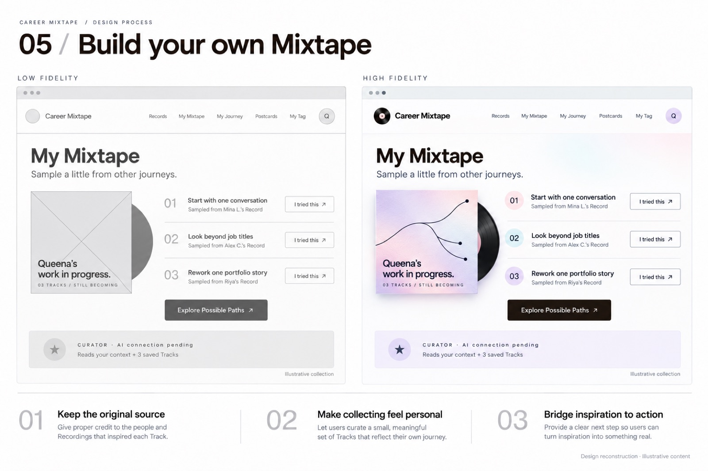
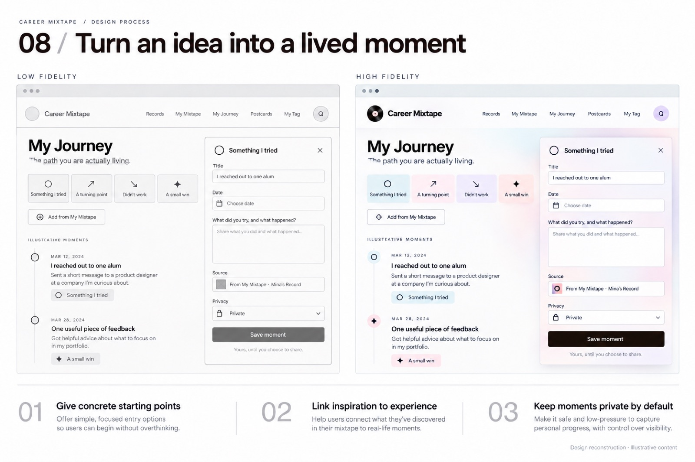

Product discovery · AI interaction concept
Career Mixtape
Make someone else’s experience useful to your next step.
A career journey platform for international students: explore stories in context, collect useful strategies, and reflect on what happens when you try them.
Example career stories are fictional. AI curation and physical NFC tags are concept extensions; the live site marks the AI connection as pending. Browsing is public; saving may require sign-in.

Experience at a glance
The human problem
For international students, a career story loses much of its usefulness when the context disappears. A job title alone does not explain the decisions, constraints, or detours behind it.
The design question: How might a student turn another person’s experience into a small, relevant action without treating that journey as a formula for success?
From research to a product model
The project developed within a design research process covering interview planning, synthesis, and journey exploration. The resulting product separates the source experience from the student’s interpretation of it.
- Record: a career story with context and key decisions.
- Track: an idea the reader may choose to try.
- Mixtape: a personal collection of those ideas.
- Journey: reflection on what happened in the reader’s own life.
This structure makes the transition from inspiration to action visible without promising a particular employment outcome.
Why AI, and who decides?
The proposed AI role is to explain connections between a confirmed user context and a story, and help organize reflections. It should offer reasons and alternatives rather than a numerical prediction of career success.
The person owns: what context to share, which stories resonate, what action to take, and whether to publish a reflection. The system should show: the source story, contextual limits, and an editable explanation.
These are interaction requirements for the AI concept. The public prototype currently demonstrates the product structure; it does not establish the quality of a live AI recommender.
A continuous interaction
The experience starts with a question, leads into a contextual story, and lets the reader carry one useful idea into their own collection. Reflection closes the loop: what worked for someone else becomes something the reader can question, adapt, or reject.
The record metaphor supports the information architecture as well as the visual language. It gives stories, collected strategies, and personal reflection different places in the experience.
What is demonstrated
The public prototype exposes Records, Mixtape, Journey, Postcards, and a Tag concept. Local design boards document explorations from wireframes to visual treatments.
Validation still needed: whether students understand the Record–Track distinction, can retrieve a saved strategy, and can distinguish a contextual suggestion from a recommendation they should trust. No conversion, placement, or AI performance results are claimed.

